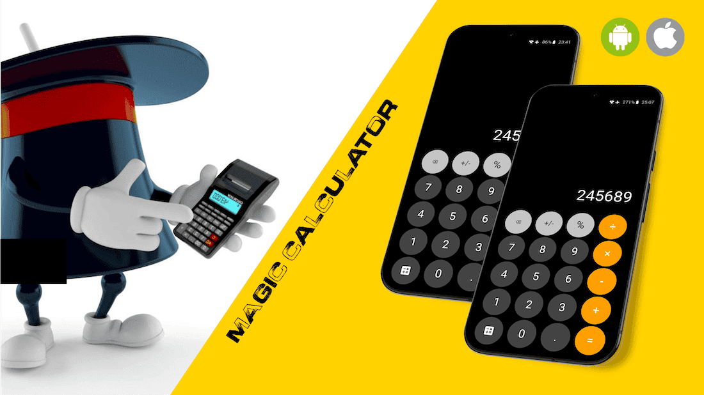

Magical calculator app that always returns the same result, no matter what you enter — a mind-bending trick tool!
Magic Calculator looks like an ordinary calculator, but no matter what numbers or operations are entered, it always returns the same result — a small trick app designed to surprise and puzzle whoever tries it.
It's a lightweight Flutter app built as a fun demonstration piece rather than a functional calculator utility.
Why/how it was used.
Why/how it was used.